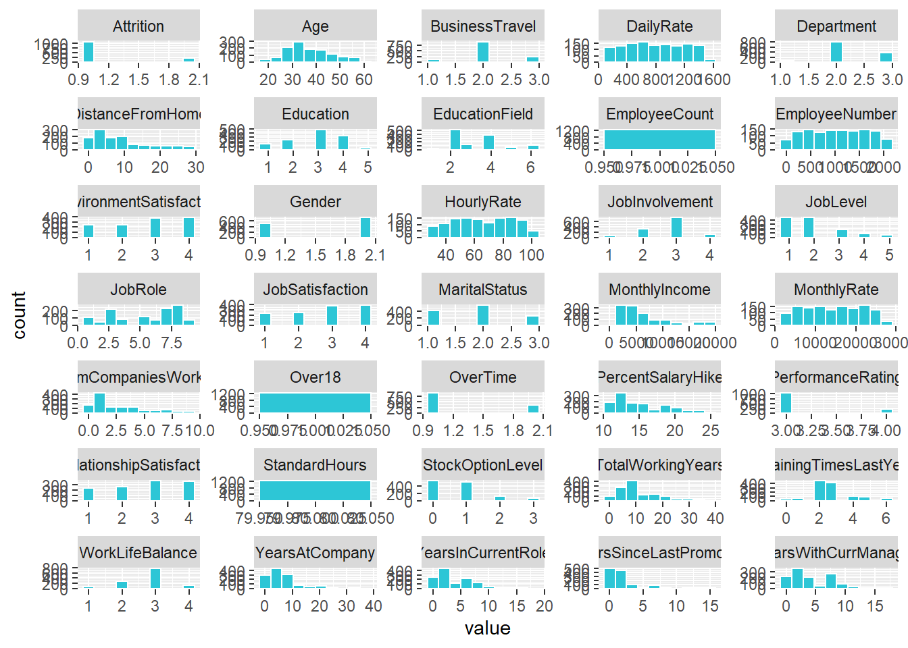
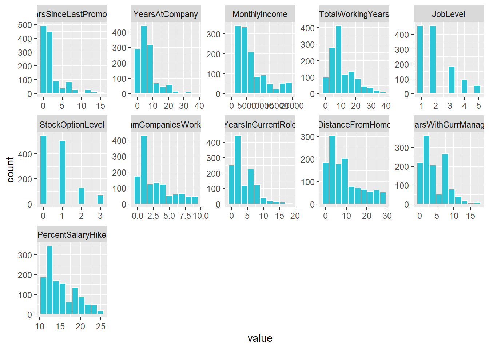
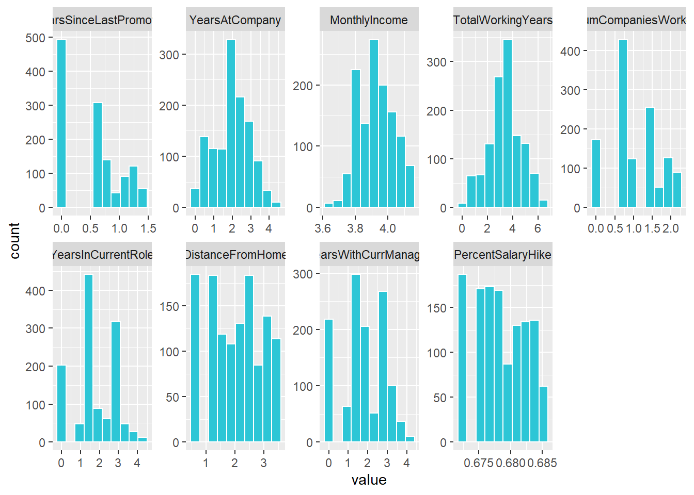
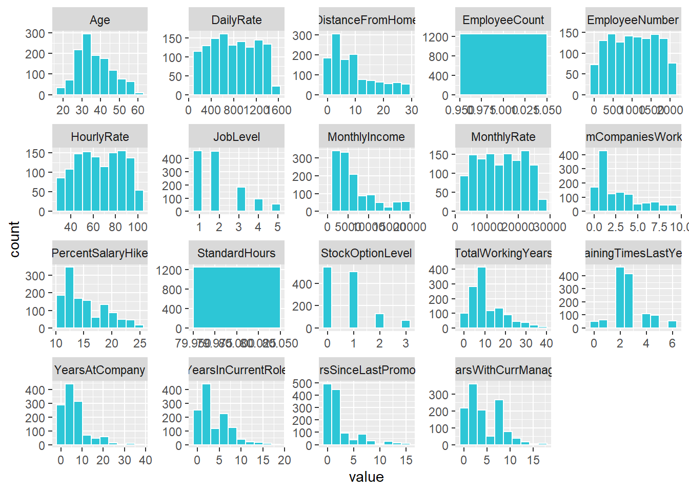
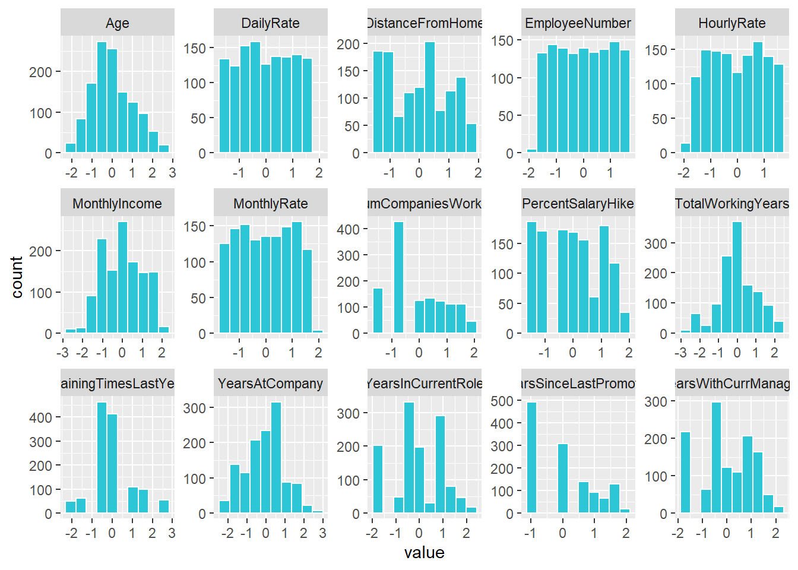

library(tidyverse)
library(readxl)
library(rsample)
library(recipes)
library(h2o)
product_backorders_tbl <- read.csv("C:/Bhavana/LECTURES/Sem 3/ds_basics-BhavanaSirumalla/product_backorders.csv")
# Data split
set.seed(seed = 1113)
split_obj <- rsample::initial_split(product_backorders_tbl, prop = 0.85)
train_product_backorders_tbl <- training(split_obj)
test_product_backorders_readable_tbl <- testing(split_obj)
#2. Specify the response and predictor variables ---
recipe_obj <- recipe(went_on_backorder ~., data = product_backorders_tbl) %>%
step_zv(all_predictors()) %>%
#step_mutate_at(JobLevel, StockOptionLevel, fn = as.factor) %>%
prep()
train_tbl <- bake(recipe_obj, new_data = train_product_backorders_tbl)
test_tbl <- bake(recipe_obj, new_data = test_product_backorders_readable_tbl)
#3. Run AutoML specifying the stopping criterion ---
h2o.init() #Modelling## Connection successful!
##
## R is connected to the H2O cluster:
## H2O cluster uptime: 2 hours 47 minutes
## H2O cluster timezone: Europe/Berlin
## H2O data parsing timezone: UTC
## H2O cluster version: 3.36.0.3
## H2O cluster version age: 1 month and 10 days
## H2O cluster name: H2O_started_from_R_bhava_drs368
## H2O cluster total nodes: 1
## H2O cluster total memory: 1.26 GB
## H2O cluster total cores: 8
## H2O cluster allowed cores: 8
## H2O cluster healthy: TRUE
## H2O Connection ip: localhost
## H2O Connection port: 54321
## H2O Connection proxy: NA
## H2O Internal Security: FALSE
## R Version: R version 4.1.1 (2021-08-10)split_h2o <- h2o.splitFrame(as.h2o(train_tbl), ratios = c(0.85), seed = 1234)##
|
| | 0%
|
|======================================================================| 100%train_h2o <- split_h2o[[1]]
valid_h2o <- split_h2o[[2]]
test_h2o <- as.h2o(test_tbl)##
|
| | 0%
|
|======================================================================| 100%y <- "went_on_backorder"
x <- setdiff(names(train_h2o), y)
automl_models_h2o <- h2o.automl(
x = x,
y = y,
training_frame = train_h2o,
validation_frame = valid_h2o,
leaderboard_frame = test_h2o,
max_runtime_secs = 30,
nfolds = 5
)##
|
| | 0%
## 17:03:13.510: User specified a validation frame with cross-validation still enabled. Please note that the models will still be validated using cross-validation only, the validation frame will be used to provide purely informative validation metrics on the trained models.
## 17:03:13.532: AutoML: XGBoost is not available; skipping it.
## 17:03:13.569: Step 'best_of_family_xgboost' not defined in provider 'StackedEnsemble': skipping it.
## 17:03:13.569: Step 'all_xgboost' not defined in provider 'StackedEnsemble': skipping it.
|
|====== | 9%
|
|=========== | 15%
|
|============= | 19%
|
|================ | 23%
|
|================== | 26%
|
|===================== | 30%
|
|========================= | 36%
|
|============================= | 41%
|
|================================= | 47%
|
|===================================== | 53%
|
|======================================== | 57%
|
|========================================== | 61%
|
|============================================= | 65%
|
|================================================ | 69%
|
|=================================================== | 73%
|
|====================================================== | 77%
|
|========================================================= | 81%
|
|============================================================ | 85%
|
|============================================================== | 89%
|
|================================================================= | 93%
|
|==================================================================== | 96%
|
|======================================================================| 100%#4. View the leader board
typeof(automl_models_h2o)## [1] "S4"slotNames(automl_models_h2o)## [1] "project_name" "leader" "leaderboard" "event_log"
## [5] "modeling_steps" "training_info"automl_models_h2o@leaderboard## model_id auc logloss
## 1 StackedEnsemble_BestOfFamily_1_AutoML_23_20220327_170313 0.9443992 0.1817906
## 2 GBM_1_AutoML_23_20220327_170313 0.9443402 0.1816339
## 3 StackedEnsemble_BestOfFamily_2_AutoML_23_20220327_170313 0.9440372 0.1820239
## 4 GBM_2_AutoML_23_20220327_170313 0.9398057 0.2321127
## 5 GBM_3_AutoML_23_20220327_170313 0.9294012 0.2591099
## 6 GBM_4_AutoML_23_20220327_170313 0.9267480 0.2724056
## aucpr mean_per_class_error rmse mse
## 1 0.7308308 0.1468463 0.2338764 0.05469817
## 2 0.7306215 0.1466474 0.2337614 0.05464437
## 3 0.7311558 0.1803690 0.2339669 0.05474049
## 4 0.7032615 0.1541900 0.2585677 0.06685726
## 5 0.6604786 0.1834286 0.2739799 0.07506497
## 6 0.6804969 0.1707600 0.2806343 0.07875559
##
## [8 rows x 7 columns]automl_models_h2o@leader## Model Details:
## ==============
##
## H2OBinomialModel: stackedensemble
## Model ID: StackedEnsemble_BestOfFamily_1_AutoML_23_20220327_170313
## Number of Base Models: 2
##
## Base Models (count by algorithm type):
##
## gbm glm
## 1 1
##
## Metalearner:
##
## Metalearner algorithm: glm
## Metalearner cross-validation fold assignment:
## Fold assignment scheme: AUTO
## Number of folds: 5
## Fold column: NULL
## Metalearner hyperparameters:
##
##
## H2OBinomialMetrics: stackedensemble
## ** Reported on training data. **
##
## MSE: 0.03421566
## RMSE: 0.1849748
## LogLoss: 0.1184467
## Mean Per-Class Error: 0.1151831
## AUC: 0.9811053
## AUCPR: 0.8816222
## Gini: 0.9622106
##
## Confusion Matrix (vertical: actual; across: predicted) for F1-optimal threshold:
## No Yes Error Rate
## No 8600 197 0.022394 =197/8797
## Yes 240 914 0.207972 =240/1154
## Totals 8840 1111 0.043915 =437/9951
##
## Maximum Metrics: Maximum metrics at their respective thresholds
## metric threshold value idx
## 1 max f1 0.458540 0.807064 160
## 2 max f2 0.206293 0.857979 244
## 3 max f0point5 0.559905 0.830288 129
## 4 max accuracy 0.458540 0.956085 160
## 5 max precision 0.982126 1.000000 0
## 6 max recall 0.015147 1.000000 361
## 7 max specificity 0.982126 1.000000 0
## 8 max absolute_mcc 0.458540 0.782476 160
## 9 max min_per_class_accuracy 0.215107 0.932932 240
## 10 max mean_per_class_accuracy 0.197887 0.935085 247
## 11 max tns 0.982126 8797.000000 0
## 12 max fns 0.982126 1152.000000 0
## 13 max fps 0.000280 8797.000000 399
## 14 max tps 0.015147 1154.000000 361
## 15 max tnr 0.982126 1.000000 0
## 16 max fnr 0.982126 0.998267 0
## 17 max fpr 0.000280 1.000000 399
## 18 max tpr 0.015147 1.000000 361
##
## Gains/Lift Table: Extract with `h2o.gainsLift(<model>, <data>)` or `h2o.gainsLift(<model>, valid=<T/F>, xval=<T/F>)`
## H2OBinomialMetrics: stackedensemble
## ** Reported on validation data. **
##
## MSE: 0.05120127
## RMSE: 0.226277
## LogLoss: 0.1705482
## Mean Per-Class Error: 0.1291504
## AUC: 0.9496758
## AUCPR: 0.7534757
## Gini: 0.8993517
##
## Confusion Matrix (vertical: actual; across: predicted) for F1-optimal threshold:
## No Yes Error Rate
## No 1968 136 0.064639 =136/2104
## Yes 55 229 0.193662 =55/284
## Totals 2023 365 0.079983 =191/2388
##
## Maximum Metrics: Maximum metrics at their respective thresholds
## metric threshold value idx
## 1 max f1 0.255215 0.705701 208
## 2 max f2 0.136536 0.786552 259
## 3 max f0point5 0.674559 0.725636 91
## 4 max accuracy 0.407624 0.929229 162
## 5 max precision 0.971466 1.000000 0
## 6 max recall 0.001156 1.000000 394
## 7 max specificity 0.971466 1.000000 0
## 8 max absolute_mcc 0.255215 0.667215 208
## 9 max min_per_class_accuracy 0.138115 0.890684 258
## 10 max mean_per_class_accuracy 0.136536 0.894286 259
## 11 max tns 0.971466 2104.000000 0
## 12 max fns 0.971466 281.000000 0
## 13 max fps 0.000261 2104.000000 399
## 14 max tps 0.001156 284.000000 394
## 15 max tnr 0.971466 1.000000 0
## 16 max fnr 0.971466 0.989437 0
## 17 max fpr 0.000261 1.000000 399
## 18 max tpr 0.001156 1.000000 394
##
## Gains/Lift Table: Extract with `h2o.gainsLift(<model>, <data>)` or `h2o.gainsLift(<model>, valid=<T/F>, xval=<T/F>)`
## H2OBinomialMetrics: stackedensemble
## ** Reported on cross-validation data. **
## ** 5-fold cross-validation on training data (Metrics computed for combined holdout predictions) **
##
## MSE: 0.05136841
## RMSE: 0.226646
## LogLoss: 0.1715596
## Mean Per-Class Error: 0.1492886
## AUC: 0.9502971
## AUCPR: 0.7395814
## Gini: 0.9005942
##
## Confusion Matrix (vertical: actual; across: predicted) for F1-optimal threshold:
## No Yes Error Rate
## No 11485 684 0.056208 =684/12169
## Yes 397 1241 0.242369 =397/1638
## Totals 11882 1925 0.078294 =1081/13807
##
## Maximum Metrics: Maximum metrics at their respective thresholds
## metric threshold value idx
## 1 max f1 0.321161 0.696604 207
## 2 max f2 0.179711 0.777385 260
## 3 max f0point5 0.547712 0.720882 136
## 4 max accuracy 0.512045 0.930253 146
## 5 max precision 0.980340 1.000000 0
## 6 max recall 0.002343 1.000000 394
## 7 max specificity 0.980340 1.000000 0
## 8 max absolute_mcc 0.236526 0.657019 237
## 9 max min_per_class_accuracy 0.127357 0.885529 284
## 10 max mean_per_class_accuracy 0.119513 0.888536 288
## 11 max tns 0.980340 12169.000000 0
## 12 max fns 0.980340 1634.000000 0
## 13 max fps 0.000347 12169.000000 399
## 14 max tps 0.002343 1638.000000 394
## 15 max tnr 0.980340 1.000000 0
## 16 max fnr 0.980340 0.997558 0
## 17 max fpr 0.000347 1.000000 399
## 18 max tpr 0.002343 1.000000 394
##
## Gains/Lift Table: Extract with `h2o.gainsLift(<model>, <data>)` or `h2o.gainsLift(<model>, valid=<T/F>, xval=<T/F>)`# Load data
library(tidyverse)
library(readxl)
library(dplyr)
employee_attrition_tbl <- read_csv("00_data/datasets-1067-1925-WA_Fn-UseC_-HR-Employee-Attrition.csv")
definitions_raw_tbl <- read_excel("00_data/data_definitions.xlsx", sheet = 1, col_names = FALSE)
#View(definitions_raw_tbl)
# Data preparation ----
# Human readable
definitions_tbl <- definitions_raw_tbl %>%
fill(...1, .direction = "down") %>%
filter(!is.na(...2)) %>%
separate(...2, into = c("key", "value"), sep = " '", remove = TRUE) %>%
rename(column_name = ...1) %>%
mutate(key = as.numeric(key)) %>%
mutate(value = value %>% str_replace(pattern = "'", replacement = ""))
definitions_tbl# DATA PREPARATION ----
# Human readable ----
definitions_list <- definitions_tbl %>%
# Mapping over lists
# Split into multiple tibbles
split(.$column_name) %>%
# Remove column_name
map(~ select(., -column_name)) %>%
# Convert to factors because they are ordered an we want to maintain that order
map(~ mutate(., value = as_factor(value)))
# definitions_list[[1]]
definitions_list[["Education"]]# Rename columns
for (i in seq_along(definitions_list)) {
list_name <- names(definitions_list)[i]
colnames(definitions_list[[i]]) <- c(list_name, paste0(list_name, "_value"))
}
definitions_list[["Education"]]data_merged_tbl <- list(HR_Data = employee_attrition_tbl) %>%
# Join everything
append(definitions_list, after = 1) %>%
reduce(left_join) %>%
# Remove unnecessary columns
select(-one_of(names(definitions_list))) %>%
# Format the "_value"
set_names(str_replace_all(names(.), pattern = "_value", replacement = "")) %>%
# Resort
select(sort(names(.)))
# Return only unique values of BusinessTravel
data_merged_tbl %>%
distinct(BusinessTravel)#
# data_merged_tbl %>%
# mutate_if(is.character, as.factor) %>%
# glimpse()
data_merged_tbl %>%
mutate_if(is.character, as.factor) %>%
select_if(is.factor) %>%
glimpse()## Rows: 1,470
## Columns: 16
## $ Attrition <fct> Yes, No, Yes, No, No, No, No, No, No, No, No,~
## $ BusinessTravel <fct> Travel_Rarely, Travel_Frequently, Travel_Rare~
## $ Department <fct> Sales, Research & Development, Research & Dev~
## $ Education <fct> College, Below College, College, Master, Belo~
## $ EducationField <fct> Life Sciences, Life Sciences, Other, Life Sci~
## $ EnvironmentSatisfaction <fct> Medium, High, Very High, Very High, Low, Very~
## $ Gender <fct> Female, Male, Male, Female, Male, Male, Femal~
## $ JobInvolvement <fct> High, Medium, Medium, High, High, High, Very ~
## $ JobRole <fct> Sales Executive, Research Scientist, Laborato~
## $ JobSatisfaction <fct> Very High, Medium, High, High, Medium, Very H~
## $ MaritalStatus <fct> Single, Married, Single, Married, Married, Si~
## $ Over18 <fct> Y, Y, Y, Y, Y, Y, Y, Y, Y, Y, Y, Y, Y, Y, Y, ~
## $ OverTime <fct> Yes, No, Yes, Yes, No, No, Yes, No, No, No, N~
## $ PerformanceRating <fct> Excellent, Outstanding, Excellent, Excellent,~
## $ RelationshipSatisfaction <fct> Low, Very High, Medium, High, Very High, High~
## $ WorkLifeBalance <fct> Bad, Better, Better, Better, Better, Good, Go~data_merged_tbl %>%
mutate_if(is.character, as.factor) %>%
select_if(is.factor) %>%
map(levels)## $Attrition
## [1] "No" "Yes"
##
## $BusinessTravel
## [1] "Non-Travel" "Travel_Frequently" "Travel_Rarely"
##
## $Department
## [1] "Human Resources" "Research & Development" "Sales"
##
## $Education
## [1] "Below College" "College" "Bachelor" "Master"
## [5] "Doctor"
##
## $EducationField
## [1] "Human Resources" "Life Sciences" "Marketing" "Medical"
## [5] "Other" "Technical Degree"
##
## $EnvironmentSatisfaction
## [1] "Low" "Medium" "High" "Very High"
##
## $Gender
## [1] "Female" "Male"
##
## $JobInvolvement
## [1] "Low" "Medium" "High" "Very High"
##
## $JobRole
## [1] "Healthcare Representative" "Human Resources"
## [3] "Laboratory Technician" "Manager"
## [5] "Manufacturing Director" "Research Director"
## [7] "Research Scientist" "Sales Executive"
## [9] "Sales Representative"
##
## $JobSatisfaction
## [1] "Low" "Medium" "High" "Very High"
##
## $MaritalStatus
## [1] "Divorced" "Married" "Single"
##
## $Over18
## [1] "Y"
##
## $OverTime
## [1] "No" "Yes"
##
## $PerformanceRating
## [1] "Low" "Good" "Excellent" "Outstanding"
##
## $RelationshipSatisfaction
## [1] "Low" "Medium" "High" "Very High"
##
## $WorkLifeBalance
## [1] "Bad" "Good" "Better" "Best"data_processed_tbl <- data_merged_tbl %>%
mutate_if(is.character, as.factor) %>%
mutate(
BusinessTravel = BusinessTravel %>% fct_relevel("Non-Travel",
"Travel_Rarely",
"Travel_Frequently"),
MaritalStatus = MaritalStatus %>% fct_relevel("Single",
"Married",
"Divorced")
)
data_processed_tbl %>%
select_if(is.factor) %>%
map(levels)## $Attrition
## [1] "No" "Yes"
##
## $BusinessTravel
## [1] "Non-Travel" "Travel_Rarely" "Travel_Frequently"
##
## $Department
## [1] "Human Resources" "Research & Development" "Sales"
##
## $Education
## [1] "Below College" "College" "Bachelor" "Master"
## [5] "Doctor"
##
## $EducationField
## [1] "Human Resources" "Life Sciences" "Marketing" "Medical"
## [5] "Other" "Technical Degree"
##
## $EnvironmentSatisfaction
## [1] "Low" "Medium" "High" "Very High"
##
## $Gender
## [1] "Female" "Male"
##
## $JobInvolvement
## [1] "Low" "Medium" "High" "Very High"
##
## $JobRole
## [1] "Healthcare Representative" "Human Resources"
## [3] "Laboratory Technician" "Manager"
## [5] "Manufacturing Director" "Research Director"
## [7] "Research Scientist" "Sales Executive"
## [9] "Sales Representative"
##
## $JobSatisfaction
## [1] "Low" "Medium" "High" "Very High"
##
## $MaritalStatus
## [1] "Single" "Married" "Divorced"
##
## $Over18
## [1] "Y"
##
## $OverTime
## [1] "No" "Yes"
##
## $PerformanceRating
## [1] "Low" "Good" "Excellent" "Outstanding"
##
## $RelationshipSatisfaction
## [1] "Low" "Medium" "High" "Very High"
##
## $WorkLifeBalance
## [1] "Bad" "Good" "Better" "Best"process_hr_data_readable <- function(data, definitions_tbl) {
definitions_list <- definitions_tbl %>%
fill(...1, .direction = "down") %>%
filter(!is.na(...2)) %>%
separate(...2, into = c("key", "value"), sep = " '", remove = TRUE) %>%
rename(column_name = ...1) %>%
mutate(key = as.numeric(key)) %>%
mutate(value = value %>% str_replace(pattern = "'", replacement = "")) %>%
split(.$column_name) %>%
map(~ select(., -column_name)) %>%
map(~ mutate(., value = as_factor(value)))
for (i in seq_along(definitions_list)) {
list_name <- names(definitions_list)[i]
colnames(definitions_list[[i]]) <- c(list_name, paste0(list_name, "_value"))
}
data_merged_tbl <- list(HR_Data = data) %>%
append(definitions_list, after = 1) %>%
reduce(left_join) %>%
select(-one_of(names(definitions_list))) %>%
set_names(str_replace_all(names(.), pattern = "_value",
replacement = "")) %>%
select(sort(names(.))) %>%
mutate_if(is.character, as.factor) %>%
mutate(
BusinessTravel = BusinessTravel %>% fct_relevel("Non-Travel",
"Travel_Rarely",
"Travel_Frequently"),
MaritalStatus = MaritalStatus %>% fct_relevel("Single",
"Married",
"Divorced")
)
return(data_merged_tbl)
}
#process_hr_data_readable(employee_attrition_tbl, definitions_raw_tbl) %>%
# glimpse()
## DATA PREPARATION ----
# Machine readable ----
# libraries
library(rsample)
library(recipes)
# Processing pipeline
# If we had stored our script in an external file
#source("00_scripts/data_processing_pipeline.R")
# If we had our raw data already split into train and test data
# train_readable_tbl <- process_hr_data_readable(train_raw_tbl, definitions_raw_tbl)
# test_redable_tbl <- process_hr_data_readable(test_raw_tbl, definitions_raw_tbl)
employee_attrition_readable_tbl <- process_hr_data_readable(employee_attrition_tbl, definitions_raw_tbl)
# Split into test and train
set.seed(seed = 1113)
split_obj <- rsample::initial_split(employee_attrition_readable_tbl, prop = 0.85)
# Assign training and test data
train_readable_tbl <- training(split_obj)
test_readable_tbl <- testing(split_obj)
# Plot Faceted Histgoram function
# To create a function and test it, we can assign our data temporarily to data
data <- train_readable_tbl
plot_hist_facet <- function(data, fct_reorder = FALSE, fct_rev = FALSE,
bins = 10, fill = "#2dc6d6", color = "white",
ncol = 5, scale = "free") {
data_factored <- data %>%
# Convert input to make the function fail safe
# (if other content might be provided)
mutate_if(is.character, as.factor) %>%
mutate_if(is.factor, as.numeric) %>%
# Data must be in long format to make facets
pivot_longer(cols = everything(),
names_to = "key",
values_to = "value",
# set key = factor() to keep the order
names_transform = list(key = forcats::fct_inorder))
if (fct_reorder) {
data_factored <- data_factored %>%
mutate(key = as.character(key) %>% as.factor())
}
if (fct_rev) {
data_factored <- data_factored %>%
mutate(key = fct_rev(key))
}
g <- data_factored %>%
ggplot(aes(x = value, group = key)) +
geom_histogram(bins = bins, fill = fill, color = color) +
facet_wrap(~ key, ncol = ncol, scale = scale)
return(g)
}
# Bring attirtion to the top (alt.: select(Attrition, everything()))
train_readable_tbl %>%
relocate(Attrition) %>%
plot_hist_facet() 
#--------------------------
# Data Preprocessing With Recipes ----
# Plan: Correlation Analysis
# 1. Zero Variance Features ----
recipe_obj <- recipe(Attrition ~ ., data = train_readable_tbl) %>%
step_zv(all_predictors())
recipe_obj %>%
prep()## Recipe
##
## Inputs:
##
## role #variables
## outcome 1
## predictor 34
##
## Training data contained 1249 data points and no missing data.
##
## Operations:
##
## Zero variance filter removed EmployeeCount, Over18, StandardHours [trained]# 2. Transformations ---- (for skewed features)
library(PerformanceAnalytics) # for skewness
skewed_feature_names <- train_readable_tbl %>%
select(where(is.numeric)) %>%
map_df(skewness) %>%
pivot_longer(cols = everything(),
names_to = "key",
values_to = "value",
names_transform = list(key = forcats::fct_inorder)) %>%
arrange(desc(value)) %>%
# Let's set the cutoff value to 0.7 (beccause TrainingTimesLastYear does not seem to be that skewed)
filter(value >= 0.7) %>%
pull(key) %>%
as.character()
train_readable_tbl %>%
select(all_of(skewed_feature_names)) %>%
plot_hist_facet()
!skewed_feature_names %in% c("JobLevel", "StockOptionLevel")## [1] TRUE TRUE TRUE TRUE FALSE FALSE TRUE TRUE TRUE TRUE TRUEskewed_feature_names <- train_readable_tbl %>%
select(where(is.numeric)) %>%
map_df(skewness) %>%
pivot_longer(cols = everything(),
names_to = "key",
values_to = "value",
names_transform = list(key = forcats::fct_inorder)) %>%
arrange(desc(value)) %>%
filter(value >= 0.7) %>%
filter(!key %in% c("JobLevel", "StockOptionLevel")) %>%
pull(key) %>%
as.character()
# We need to convert those columns to factors in the next step
factor_names <- c("JobLevel", "StockOptionLevel")
recipe_obj <- recipe(Attrition ~ ., data = train_readable_tbl) %>%
step_zv(all_predictors()) %>%
step_YeoJohnson(skewed_feature_names) %>%
step_mutate_at(factor_names, fn = as.factor)
recipe_obj %>%
prep() %>%
bake(train_readable_tbl) %>%
select(skewed_feature_names) %>%
plot_hist_facet() 
# 3. Center and scale
# Plot numeric data
train_readable_tbl %>%
select(where(is.numeric)) %>%
plot_hist_facet()
recipe_obj <- recipe(Attrition ~ ., data = train_readable_tbl) %>%
step_zv(all_predictors()) %>%
step_YeoJohnson(skewed_feature_names) %>%
step_mutate_at(factor_names, fn = as.factor) %>%
step_center(all_numeric()) %>%
step_scale(all_numeric())
# You can compare the means attribute before and after prepping the recipe
recipe_obj$steps[[4]] # before prep## $terms
## <list_of<quosure>>
##
## [[1]]
## <quosure>
## expr: ^all_numeric()
## env: 0x000000002ddd06f8
##
##
## $role
## [1] NA
##
## $trained
## [1] FALSE
##
## $means
## NULL
##
## $na_rm
## [1] TRUE
##
## $skip
## [1] FALSE
##
## $id
## [1] "center_GWd48"
##
## attr(,"class")
## [1] "step_center" "step"prepared_recipe <- recipe_obj %>% prep()
prepared_recipe$steps[[4]]## $terms
## <list_of<quosure>>
##
## [[1]]
## <quosure>
## expr: ^all_numeric()
## env: 0x000000002ddd06f8
##
##
## $role
## [1] NA
##
## $trained
## [1] TRUE
##
## $means
## Age DailyRate DistanceFromHome
## 3.689672e+01 7.978519e+02 2.009472e+00
## EmployeeNumber HourlyRate MonthlyIncome
## 1.039169e+03 6.595757e+01 3.926886e+00
## MonthlyRate NumCompaniesWorked PercentSalaryHike
## 1.447811e+04 1.050292e+00 6.783763e-01
## TotalWorkingYears TrainingTimesLastYear YearsAtCompany
## 3.352732e+00 2.786229e+00 2.011652e+00
## YearsInCurrentRole YearsSinceLastPromotion YearsWithCurrManager
## 1.727181e+00 5.225350e-01 1.709616e+00
##
## $na_rm
## [1] TRUE
##
## $skip
## [1] FALSE
##
## $id
## [1] "center_GWd48"
##
## attr(,"class")
## [1] "step_center" "step"prepared_recipe %>%
bake(new_data = train_readable_tbl) %>%
select(where(is.numeric)) %>%
plot_hist_facet()
# 4. Dummy variables ----
recipe_obj <- recipe(Attrition ~ ., data = train_readable_tbl) %>%
step_zv(all_predictors()) %>%
step_YeoJohnson(skewed_feature_names) %>%
step_mutate_at(factor_names, fn = as.factor) %>%
step_center(all_numeric()) %>%
step_scale(all_numeric()) %>%
step_dummy(all_nominal()) %>%
# prepare the final recipe
prep()
train_tbl <- bake(recipe_obj, new_data = train_readable_tbl)
#train_tbl %>% glimpse()
test_tbl <- bake(recipe_obj, new_data = test_readable_tbl)# H2O modeling
library(h2o)
library(readxl)
employee_attrition_tbl <- read_csv("00_data/datasets-1067-1925-WA_Fn-UseC_-HR-Employee-Attrition.csv")
definitions_raw_tbl <- read_excel("00_data/data_definitions.xlsx", sheet = 1, col_names = FALSE)
employee_attrition_readable_tbl <- process_hr_data_readable(employee_attrition_tbl, definitions_raw_tbl)
set.seed(seed = 1113)
split_obj <- rsample::initial_split(employee_attrition_readable_tbl, prop = 0.85)
train_readable_tbl <- training(split_obj)
test_readable_tbl <- testing(split_obj)
recipe_obj <- recipe(Attrition ~., data = train_readable_tbl) %>%
step_zv(all_predictors()) %>%
step_mutate_at(JobLevel, StockOptionLevel, fn = as.factor) %>%
prep()
train_tbl <- bake(recipe_obj, new_data = train_readable_tbl)
test_tbl <- bake(recipe_obj, new_data = test_readable_tbl)
# Modeling
h2o.init()## Connection successful!
##
## R is connected to the H2O cluster:
## H2O cluster uptime: 2 hours 36 minutes
## H2O cluster timezone: Europe/Berlin
## H2O data parsing timezone: UTC
## H2O cluster version: 3.36.0.3
## H2O cluster version age: 1 month and 12 days
## H2O cluster name: H2O_started_from_R_bhava_drs368
## H2O cluster total nodes: 1
## H2O cluster total memory: 1.41 GB
## H2O cluster total cores: 8
## H2O cluster allowed cores: 8
## H2O cluster healthy: TRUE
## H2O Connection ip: localhost
## H2O Connection port: 54321
## H2O Connection proxy: NA
## H2O Internal Security: FALSE
## R Version: R version 4.1.1 (2021-08-10)# Split data into a training and a validation data frame
# Setting the seed is just for reproducability
split_h2o <- h2o.splitFrame(as.h2o(train_tbl), ratios = c(0.85), seed = 1234)##
|
| | 0%
|
|======================================================================| 100%train_h2o <- split_h2o[[1]]
valid_h2o <- split_h2o[[2]]
test_h2o <- as.h2o(test_tbl)##
|
| | 0%
|
|======================================================================| 100%# Set the target and predictors
y <- "Attrition"
x <- setdiff(names(train_h2o), y)
#?h2o.automl
automl_models_h2o <- h2o.automl(
x = x,
y = y,
training_frame = train_h2o,
validation_frame = valid_h2o,
leaderboard_frame = test_h2o,
max_runtime_secs = 30,
nfolds = 5
)##
|
| | 0%
|
| | 1%
## 01:45:04.341: User specified a validation frame with cross-validation still enabled. Please note that the models will still be validated using cross-validation only, the validation frame will be used to provide purely informative validation metrics on the trained models.
## 01:45:04.373: AutoML: XGBoost is not available; skipping it.
## 01:45:04.377: Step 'best_of_family_xgboost' not defined in provider 'StackedEnsemble': skipping it.
## 01:45:04.377: Step 'all_xgboost' not defined in provider 'StackedEnsemble': skipping it.
|
|=== | 4%
|
|====== | 8%
|
|======== | 12%
|
|=========== | 15%
|
|============= | 19%
|
|================ | 22%
|
|=================== | 26%
|
|===================== | 30%
|
|======================== | 34%
|
|=========================== | 38%
|
|============================= | 42%
|
|================================ | 46%
|
|=================================== | 50%
|
|===================================== | 53%
|
|======================================== | 57%
|
|=========================================== | 61%
|
|============================================== | 65%
|
|================================================ | 69%
|
|=================================================== | 73%
|
|====================================================== | 77%
|
|======================================================== | 81%
|
|================================================================= | 93%
|
|==================================================================== | 97%
|
|======================================================================| 100%typeof(automl_models_h2o)## [1] "S4"slotNames(automl_models_h2o)## [1] "project_name" "leader" "leaderboard" "event_log"
## [5] "modeling_steps" "training_info"automl_models_h2o@leaderboard## model_id auc logloss
## 1 StackedEnsemble_AllModels_2_AutoML_7_20220329_14504 0.8597843 0.3443007
## 2 StackedEnsemble_AllModels_1_AutoML_7_20220329_14504 0.8595275 0.3452346
## 3 StackedEnsemble_BestOfFamily_2_AutoML_7_20220329_14504 0.8595275 0.3447759
## 4 StackedEnsemble_BestOfFamily_3_AutoML_7_20220329_14504 0.8590139 0.3447459
## 5 StackedEnsemble_BestOfFamily_4_AutoML_7_20220329_14504 0.8578582 0.3457950
## 6 StackedEnsemble_AllModels_3_AutoML_7_20220329_14504 0.8568310 0.3498025
## aucpr mean_per_class_error rmse mse
## 1 0.7208165 0.2299692 0.3207133 0.1028570
## 2 0.7175280 0.2214304 0.3209348 0.1029992
## 3 0.7175280 0.2214304 0.3202003 0.1025282
## 4 0.7153553 0.2214304 0.3203905 0.1026501
## 5 0.7117997 0.2214304 0.3207222 0.1028627
## 6 0.7001227 0.2098100 0.3233679 0.1045668
##
## [34 rows x 7 columns]automl_models_h2o@leader## Model Details:
## ==============
##
## H2OBinomialModel: stackedensemble
## Model ID: StackedEnsemble_AllModels_2_AutoML_7_20220329_14504
## Number of Base Models: 9
##
## Base Models (count by algorithm type):
##
## deeplearning drf gbm glm
## 1 2 5 1
##
## Metalearner:
##
## Metalearner algorithm: glm
## Metalearner cross-validation fold assignment:
## Fold assignment scheme: AUTO
## Number of folds: 5
## Fold column: NULL
## Metalearner hyperparameters:
##
##
## H2OBinomialMetrics: stackedensemble
## ** Reported on training data. **
##
## MSE: 0.05642237
## RMSE: 0.2375339
## LogLoss: 0.2099596
## Mean Per-Class Error: 0.1390078
## AUC: 0.9368182
## AUCPR: 0.852407
## Gini: 0.8736364
##
## Confusion Matrix (vertical: actual; across: predicted) for F1-optimal threshold:
## No Yes Error Rate
## No 885 24 0.026403 =24/909
## Yes 39 116 0.251613 =39/155
## Totals 924 140 0.059211 =63/1064
##
## Maximum Metrics: Maximum metrics at their respective thresholds
## metric threshold value idx
## 1 max f1 0.356598 0.786441 116
## 2 max f2 0.199584 0.795991 179
## 3 max f0point5 0.496801 0.850091 81
## 4 max accuracy 0.389523 0.941729 108
## 5 max precision 0.967387 1.000000 0
## 6 max recall 0.005948 1.000000 389
## 7 max specificity 0.967387 1.000000 0
## 8 max absolute_mcc 0.356598 0.753487 116
## 9 max min_per_class_accuracy 0.193099 0.877419 184
## 10 max mean_per_class_accuracy 0.199584 0.884329 179
## 11 max tns 0.967387 909.000000 0
## 12 max fns 0.967387 154.000000 0
## 13 max fps 0.000750 909.000000 399
## 14 max tps 0.005948 155.000000 389
## 15 max tnr 0.967387 1.000000 0
## 16 max fnr 0.967387 0.993548 0
## 17 max fpr 0.000750 1.000000 399
## 18 max tpr 0.005948 1.000000 389
##
## Gains/Lift Table: Extract with `h2o.gainsLift(<model>, <data>)` or `h2o.gainsLift(<model>, valid=<T/F>, xval=<T/F>)`
## H2OBinomialMetrics: stackedensemble
## ** Reported on validation data. **
##
## MSE: 0.1021995
## RMSE: 0.3196866
## LogLoss: 0.3363744
## Mean Per-Class Error: 0.2016649
## AUC: 0.8696742
## AUCPR: 0.7206884
## Gini: 0.7393484
##
## Confusion Matrix (vertical: actual; across: predicted) for F1-optimal threshold:
## No Yes Error Rate
## No 138 9 0.061224 =9/147
## Yes 13 25 0.342105 =13/38
## Totals 151 34 0.118919 =22/185
##
## Maximum Metrics: Maximum metrics at their respective thresholds
## metric threshold value idx
## 1 max f1 0.377957 0.694444 33
## 2 max f2 0.091811 0.711382 93
## 3 max f0point5 0.485715 0.720339 19
## 4 max accuracy 0.377957 0.881081 33
## 5 max precision 0.924801 1.000000 0
## 6 max recall 0.018841 1.000000 146
## 7 max specificity 0.924801 1.000000 0
## 8 max absolute_mcc 0.377957 0.622382 33
## 9 max min_per_class_accuracy 0.168031 0.775510 62
## 10 max mean_per_class_accuracy 0.293772 0.807644 40
## 11 max tns 0.924801 147.000000 0
## 12 max fns 0.924801 37.000000 0
## 13 max fps 0.001698 147.000000 184
## 14 max tps 0.018841 38.000000 146
## 15 max tnr 0.924801 1.000000 0
## 16 max fnr 0.924801 0.973684 0
## 17 max fpr 0.001698 1.000000 184
## 18 max tpr 0.018841 1.000000 146
##
## Gains/Lift Table: Extract with `h2o.gainsLift(<model>, <data>)` or `h2o.gainsLift(<model>, valid=<T/F>, xval=<T/F>)`
## H2OBinomialMetrics: stackedensemble
## ** Reported on cross-validation data. **
## ** 5-fold cross-validation on training data (Metrics computed for combined holdout predictions) **
##
## MSE: 0.0853256
## RMSE: 0.2921055
## LogLoss: 0.3016591
## Mean Per-Class Error: 0.2186735
## AUC: 0.8385677
## AUCPR: 0.6095316
## Gini: 0.6771355
##
## Confusion Matrix (vertical: actual; across: predicted) for F1-optimal threshold:
## No Yes Error Rate
## No 834 75 0.082508 =75/909
## Yes 55 100 0.354839 =55/155
## Totals 889 175 0.122180 =130/1064
##
## Maximum Metrics: Maximum metrics at their respective thresholds
## metric threshold value idx
## 1 max f1 0.279731 0.606061 138
## 2 max f2 0.249402 0.646341 153
## 3 max f0point5 0.440300 0.664137 82
## 4 max accuracy 0.440300 0.898496 82
## 5 max precision 0.966365 1.000000 0
## 6 max recall 0.000445 1.000000 399
## 7 max specificity 0.966365 1.000000 0
## 8 max absolute_mcc 0.426126 0.535604 86
## 9 max min_per_class_accuracy 0.157058 0.767742 215
## 10 max mean_per_class_accuracy 0.249402 0.790230 153
## 11 max tns 0.966365 909.000000 0
## 12 max fns 0.966365 154.000000 0
## 13 max fps 0.000445 909.000000 399
## 14 max tps 0.000445 155.000000 399
## 15 max tnr 0.966365 1.000000 0
## 16 max fnr 0.966365 0.993548 0
## 17 max fpr 0.000445 1.000000 399
## 18 max tpr 0.000445 1.000000 399
##
## Gains/Lift Table: Extract with `h2o.gainsLift(<model>, <data>)` or `h2o.gainsLift(<model>, valid=<T/F>, xval=<T/F>)`# Depending on the algorithm, the output will be different
#h2o.getModel("model_ml/GBM_grid_1_AutoML_41_20220328_03648_model_3")
# Extracts and H2O model name by a position so can more easily use h2o.getModel()
extract_h2o_model_name_by_position <- function(h2o_leaderboard, n = 1, verbose = T) {
model_name <- h2o_leaderboard %>%
as.tibble() %>%
slice(n) %>%
pull(model_id)
if (verbose) message(model_name)
return(model_name)
}
automl_models_h2o@leaderboard %>%
extract_h2o_model_name_by_position(6) %>%
h2o.getModel()## Model Details:
## ==============
##
## H2OBinomialModel: stackedensemble
## Model ID: StackedEnsemble_AllModels_3_AutoML_7_20220329_14504
## Number of Base Models: 27
##
## Base Models (count by algorithm type):
##
## deeplearning drf gbm glm
## 4 2 20 1
##
## Metalearner:
##
## Metalearner algorithm: glm
## Metalearner cross-validation fold assignment:
## Fold assignment scheme: AUTO
## Number of folds: 5
## Fold column: NULL
## Metalearner hyperparameters:
##
##
## H2OBinomialMetrics: stackedensemble
## ** Reported on training data. **
##
## MSE: 0.0452886
## RMSE: 0.2128112
## LogLoss: 0.1775085
## Mean Per-Class Error: 0.1232797
## AUC: 0.9550623
## AUCPR: 0.8981525
## Gini: 0.9101246
##
## Confusion Matrix (vertical: actual; across: predicted) for F1-optimal threshold:
## No Yes Error Rate
## No 896 13 0.014301 =13/909
## Yes 36 119 0.232258 =36/155
## Totals 932 132 0.046053 =49/1064
##
## Maximum Metrics: Maximum metrics at their respective thresholds
## metric threshold value idx
## 1 max f1 0.411658 0.829268 113
## 2 max f2 0.271804 0.845960 143
## 3 max f0point5 0.490005 0.902439 100
## 4 max accuracy 0.490005 0.954887 100
## 5 max precision 0.980056 1.000000 0
## 6 max recall 0.007149 1.000000 384
## 7 max specificity 0.980056 1.000000 0
## 8 max absolute_mcc 0.448897 0.808880 107
## 9 max min_per_class_accuracy 0.186418 0.896774 181
## 10 max mean_per_class_accuracy 0.271804 0.911356 143
## 11 max tns 0.980056 909.000000 0
## 12 max fns 0.980056 154.000000 0
## 13 max fps 0.000499 909.000000 399
## 14 max tps 0.007149 155.000000 384
## 15 max tnr 0.980056 1.000000 0
## 16 max fnr 0.980056 0.993548 0
## 17 max fpr 0.000499 1.000000 399
## 18 max tpr 0.007149 1.000000 384
##
## Gains/Lift Table: Extract with `h2o.gainsLift(<model>, <data>)` or `h2o.gainsLift(<model>, valid=<T/F>, xval=<T/F>)`
## H2OBinomialMetrics: stackedensemble
## ** Reported on validation data. **
##
## MSE: 0.1020925
## RMSE: 0.3195192
## LogLoss: 0.3368651
## Mean Per-Class Error: 0.2182241
## AUC: 0.8644826
## AUCPR: 0.7168578
## Gini: 0.7289653
##
## Confusion Matrix (vertical: actual; across: predicted) for F1-optimal threshold:
## No Yes Error Rate
## No 137 10 0.068027 =10/147
## Yes 14 24 0.368421 =14/38
## Totals 151 34 0.129730 =24/185
##
## Maximum Metrics: Maximum metrics at their respective thresholds
## metric threshold value idx
## 1 max f1 0.400752 0.666667 33
## 2 max f2 0.082908 0.705645 95
## 3 max f0point5 0.486717 0.708955 23
## 4 max accuracy 0.486717 0.870270 23
## 5 max precision 0.947778 1.000000 0
## 6 max recall 0.018288 1.000000 144
## 7 max specificity 0.947778 1.000000 0
## 8 max absolute_mcc 0.400752 0.587836 33
## 9 max min_per_class_accuracy 0.193331 0.763158 56
## 10 max mean_per_class_accuracy 0.257515 0.803795 46
## 11 max tns 0.947778 147.000000 0
## 12 max fns 0.947778 37.000000 0
## 13 max fps 0.001135 147.000000 184
## 14 max tps 0.018288 38.000000 144
## 15 max tnr 0.947778 1.000000 0
## 16 max fnr 0.947778 0.973684 0
## 17 max fpr 0.001135 1.000000 184
## 18 max tpr 0.018288 1.000000 144
##
## Gains/Lift Table: Extract with `h2o.gainsLift(<model>, <data>)` or `h2o.gainsLift(<model>, valid=<T/F>, xval=<T/F>)`
## H2OBinomialMetrics: stackedensemble
## ** Reported on cross-validation data. **
## ** 5-fold cross-validation on training data (Metrics computed for combined holdout predictions) **
##
## MSE: 0.08504808
## RMSE: 0.29163
## LogLoss: 0.3000491
## Mean Per-Class Error: 0.2218248
## AUC: 0.842152
## AUCPR: 0.6103475
## Gini: 0.6843039
##
## Confusion Matrix (vertical: actual; across: predicted) for F1-optimal threshold:
## No Yes Error Rate
## No 840 69 0.075908 =69/909
## Yes 57 98 0.367742 =57/155
## Totals 897 167 0.118421 =126/1064
##
## Maximum Metrics: Maximum metrics at their respective thresholds
## metric threshold value idx
## 1 max f1 0.280710 0.608696 135
## 2 max f2 0.158465 0.643939 207
## 3 max f0point5 0.417379 0.647986 88
## 4 max accuracy 0.417379 0.895677 88
## 5 max precision 0.970876 1.000000 0
## 6 max recall 0.000441 1.000000 399
## 7 max specificity 0.970876 1.000000 0
## 8 max absolute_mcc 0.355503 0.544754 109
## 9 max min_per_class_accuracy 0.144290 0.771177 218
## 10 max mean_per_class_accuracy 0.249163 0.783779 153
## 11 max tns 0.970876 909.000000 0
## 12 max fns 0.970876 154.000000 0
## 13 max fps 0.000441 909.000000 399
## 14 max tps 0.000441 155.000000 399
## 15 max tnr 0.970876 1.000000 0
## 16 max fnr 0.970876 0.993548 0
## 17 max fpr 0.000441 1.000000 399
## 18 max tpr 0.000441 1.000000 399
##
## Gains/Lift Table: Extract with `h2o.gainsLift(<model>, <data>)` or `h2o.gainsLift(<model>, valid=<T/F>, xval=<T/F>)`#h2o.getModel("StackedEnsemble_BestOfFamily_2_AutoML_1_20220325_235425") %>%
# h2o.saveModel(path = "model_business case/")
h2o.loadModel("model_business case/StackedEnsemble_BestOfFamily_2_AutoML_1_20220325_235425")## Model Details:
## ==============
##
## H2OBinomialModel: stackedensemble
## Model ID: StackedEnsemble_BestOfFamily_2_AutoML_1_20220325_235425
## Number of Base Models: 3
##
## Base Models (count by algorithm type):
##
## drf gbm glm
## 1 1 1
##
## Metalearner:
##
## Metalearner algorithm: glm
## Metalearner cross-validation fold assignment:
## Fold assignment scheme: AUTO
## Number of folds: 5
## Fold column: NULL
## Metalearner hyperparameters:
##
##
## H2OBinomialMetrics: stackedensemble
## ** Reported on training data. **
##
## MSE: 0.06490733
## RMSE: 0.2547692
## LogLoss: 0.2355832
## Mean Per-Class Error: 0.1532347
## AUC: 0.9121828
## AUCPR: 0.7943757
## Gini: 0.8243657
##
## Confusion Matrix (vertical: actual; across: predicted) for F1-optimal threshold:
## No Yes Error Rate
## No 865 44 0.048405 =44/909
## Yes 40 115 0.258065 =40/155
## Totals 905 159 0.078947 =84/1064
##
## Maximum Metrics: Maximum metrics at their respective thresholds
## metric threshold value idx
## 1 max f1 0.316689 0.732484 133
## 2 max f2 0.224516 0.748503 170
## 3 max f0point5 0.488455 0.794393 85
## 4 max accuracy 0.424743 0.926692 102
## 5 max precision 0.967528 1.000000 0
## 6 max recall 0.002807 1.000000 394
## 7 max specificity 0.967528 1.000000 0
## 8 max absolute_mcc 0.340594 0.687025 123
## 9 max min_per_class_accuracy 0.178573 0.845161 199
## 10 max mean_per_class_accuracy 0.224516 0.853721 170
## 11 max tns 0.967528 909.000000 0
## 12 max fns 0.967528 154.000000 0
## 13 max fps 0.000514 909.000000 399
## 14 max tps 0.002807 155.000000 394
## 15 max tnr 0.967528 1.000000 0
## 16 max fnr 0.967528 0.993548 0
## 17 max fpr 0.000514 1.000000 399
## 18 max tpr 0.002807 1.000000 394
##
## Gains/Lift Table: Extract with `h2o.gainsLift(<model>, <data>)` or `h2o.gainsLift(<model>, valid=<T/F>, xval=<T/F>)`
## H2OBinomialMetrics: stackedensemble
## ** Reported on validation data. **
##
## MSE: 0.1017976
## RMSE: 0.3190574
## LogLoss: 0.3365705
## Mean Per-Class Error: 0.1953097
## AUC: 0.867526
## AUCPR: 0.7250881
## Gini: 0.7350519
##
## Confusion Matrix (vertical: actual; across: predicted) for F1-optimal threshold:
## No Yes Error Rate
## No 136 11 0.074830 =11/147
## Yes 12 26 0.315789 =12/38
## Totals 148 37 0.124324 =23/185
##
## Maximum Metrics: Maximum metrics at their respective thresholds
## metric threshold value idx
## 1 max f1 0.335112 0.693333 36
## 2 max f2 0.226818 0.710784 51
## 3 max f0point5 0.544687 0.722222 12
## 4 max accuracy 0.422388 0.875676 28
## 5 max precision 0.914765 1.000000 0
## 6 max recall 0.016629 1.000000 144
## 7 max specificity 0.914765 1.000000 0
## 8 max absolute_mcc 0.335112 0.615471 36
## 9 max min_per_class_accuracy 0.226818 0.763158 51
## 10 max mean_per_class_accuracy 0.323061 0.811045 39
## 11 max tns 0.914765 147.000000 0
## 12 max fns 0.914765 37.000000 0
## 13 max fps 0.001128 147.000000 184
## 14 max tps 0.016629 38.000000 144
## 15 max tnr 0.914765 1.000000 0
## 16 max fnr 0.914765 0.973684 0
## 17 max fpr 0.001128 1.000000 184
## 18 max tpr 0.016629 1.000000 144
##
## Gains/Lift Table: Extract with `h2o.gainsLift(<model>, <data>)` or `h2o.gainsLift(<model>, valid=<T/F>, xval=<T/F>)`
## H2OBinomialMetrics: stackedensemble
## ** Reported on cross-validation data. **
## ** 5-fold cross-validation on training data (Metrics computed for combined holdout predictions) **
##
## MSE: 0.08470671
## RMSE: 0.2910442
## LogLoss: 0.2999842
## Mean Per-Class Error: 0.2165478
## AUC: 0.8443167
## AUCPR: 0.6164973
## Gini: 0.6886334
##
## Confusion Matrix (vertical: actual; across: predicted) for F1-optimal threshold:
## No Yes Error Rate
## No 832 77 0.084708 =77/909
## Yes 54 101 0.348387 =54/155
## Totals 886 178 0.123120 =131/1064
##
## Maximum Metrics: Maximum metrics at their respective thresholds
## metric threshold value idx
## 1 max f1 0.275968 0.606607 135
## 2 max f2 0.159629 0.649142 207
## 3 max f0point5 0.409333 0.670194 86
## 4 max accuracy 0.409333 0.900376 86
## 5 max precision 0.984374 1.000000 0
## 6 max recall 0.000440 1.000000 399
## 7 max specificity 0.984374 1.000000 0
## 8 max absolute_mcc 0.396174 0.551056 91
## 9 max min_per_class_accuracy 0.159629 0.780645 207
## 10 max mean_per_class_accuracy 0.159629 0.785262 207
## 11 max tns 0.984374 909.000000 0
## 12 max fns 0.984374 154.000000 0
## 13 max fps 0.000440 909.000000 399
## 14 max tps 0.000440 155.000000 399
## 15 max tnr 0.984374 1.000000 0
## 16 max fnr 0.984374 0.993548 0
## 17 max fpr 0.000440 1.000000 399
## 18 max tpr 0.000440 1.000000 399
##
## Gains/Lift Table: Extract with `h2o.gainsLift(<model>, <data>)` or `h2o.gainsLift(<model>, valid=<T/F>, xval=<T/F>)`# Choose whatever model you want
stacked_ensemble_h2o <- h2o.loadModel("model_business case/StackedEnsemble_BestOfFamily_2_AutoML_1_20220325_235425")
stacked_ensemble_h2o## Model Details:
## ==============
##
## H2OBinomialModel: stackedensemble
## Model ID: StackedEnsemble_BestOfFamily_2_AutoML_1_20220325_235425
## Number of Base Models: 3
##
## Base Models (count by algorithm type):
##
## drf gbm glm
## 1 1 1
##
## Metalearner:
##
## Metalearner algorithm: glm
## Metalearner cross-validation fold assignment:
## Fold assignment scheme: AUTO
## Number of folds: 5
## Fold column: NULL
## Metalearner hyperparameters:
##
##
## H2OBinomialMetrics: stackedensemble
## ** Reported on training data. **
##
## MSE: 0.06490733
## RMSE: 0.2547692
## LogLoss: 0.2355832
## Mean Per-Class Error: 0.1532347
## AUC: 0.9121828
## AUCPR: 0.7943757
## Gini: 0.8243657
##
## Confusion Matrix (vertical: actual; across: predicted) for F1-optimal threshold:
## No Yes Error Rate
## No 865 44 0.048405 =44/909
## Yes 40 115 0.258065 =40/155
## Totals 905 159 0.078947 =84/1064
##
## Maximum Metrics: Maximum metrics at their respective thresholds
## metric threshold value idx
## 1 max f1 0.316689 0.732484 133
## 2 max f2 0.224516 0.748503 170
## 3 max f0point5 0.488455 0.794393 85
## 4 max accuracy 0.424743 0.926692 102
## 5 max precision 0.967528 1.000000 0
## 6 max recall 0.002807 1.000000 394
## 7 max specificity 0.967528 1.000000 0
## 8 max absolute_mcc 0.340594 0.687025 123
## 9 max min_per_class_accuracy 0.178573 0.845161 199
## 10 max mean_per_class_accuracy 0.224516 0.853721 170
## 11 max tns 0.967528 909.000000 0
## 12 max fns 0.967528 154.000000 0
## 13 max fps 0.000514 909.000000 399
## 14 max tps 0.002807 155.000000 394
## 15 max tnr 0.967528 1.000000 0
## 16 max fnr 0.967528 0.993548 0
## 17 max fpr 0.000514 1.000000 399
## 18 max tpr 0.002807 1.000000 394
##
## Gains/Lift Table: Extract with `h2o.gainsLift(<model>, <data>)` or `h2o.gainsLift(<model>, valid=<T/F>, xval=<T/F>)`
## H2OBinomialMetrics: stackedensemble
## ** Reported on validation data. **
##
## MSE: 0.1017976
## RMSE: 0.3190574
## LogLoss: 0.3365705
## Mean Per-Class Error: 0.1953097
## AUC: 0.867526
## AUCPR: 0.7250881
## Gini: 0.7350519
##
## Confusion Matrix (vertical: actual; across: predicted) for F1-optimal threshold:
## No Yes Error Rate
## No 136 11 0.074830 =11/147
## Yes 12 26 0.315789 =12/38
## Totals 148 37 0.124324 =23/185
##
## Maximum Metrics: Maximum metrics at their respective thresholds
## metric threshold value idx
## 1 max f1 0.335112 0.693333 36
## 2 max f2 0.226818 0.710784 51
## 3 max f0point5 0.544687 0.722222 12
## 4 max accuracy 0.422388 0.875676 28
## 5 max precision 0.914765 1.000000 0
## 6 max recall 0.016629 1.000000 144
## 7 max specificity 0.914765 1.000000 0
## 8 max absolute_mcc 0.335112 0.615471 36
## 9 max min_per_class_accuracy 0.226818 0.763158 51
## 10 max mean_per_class_accuracy 0.323061 0.811045 39
## 11 max tns 0.914765 147.000000 0
## 12 max fns 0.914765 37.000000 0
## 13 max fps 0.001128 147.000000 184
## 14 max tps 0.016629 38.000000 144
## 15 max tnr 0.914765 1.000000 0
## 16 max fnr 0.914765 0.973684 0
## 17 max fpr 0.001128 1.000000 184
## 18 max tpr 0.016629 1.000000 144
##
## Gains/Lift Table: Extract with `h2o.gainsLift(<model>, <data>)` or `h2o.gainsLift(<model>, valid=<T/F>, xval=<T/F>)`
## H2OBinomialMetrics: stackedensemble
## ** Reported on cross-validation data. **
## ** 5-fold cross-validation on training data (Metrics computed for combined holdout predictions) **
##
## MSE: 0.08470671
## RMSE: 0.2910442
## LogLoss: 0.2999842
## Mean Per-Class Error: 0.2165478
## AUC: 0.8443167
## AUCPR: 0.6164973
## Gini: 0.6886334
##
## Confusion Matrix (vertical: actual; across: predicted) for F1-optimal threshold:
## No Yes Error Rate
## No 832 77 0.084708 =77/909
## Yes 54 101 0.348387 =54/155
## Totals 886 178 0.123120 =131/1064
##
## Maximum Metrics: Maximum metrics at their respective thresholds
## metric threshold value idx
## 1 max f1 0.275968 0.606607 135
## 2 max f2 0.159629 0.649142 207
## 3 max f0point5 0.409333 0.670194 86
## 4 max accuracy 0.409333 0.900376 86
## 5 max precision 0.984374 1.000000 0
## 6 max recall 0.000440 1.000000 399
## 7 max specificity 0.984374 1.000000 0
## 8 max absolute_mcc 0.396174 0.551056 91
## 9 max min_per_class_accuracy 0.159629 0.780645 207
## 10 max mean_per_class_accuracy 0.159629 0.785262 207
## 11 max tns 0.984374 909.000000 0
## 12 max fns 0.984374 154.000000 0
## 13 max fps 0.000440 909.000000 399
## 14 max tps 0.000440 155.000000 399
## 15 max tnr 0.984374 1.000000 0
## 16 max fnr 0.984374 0.993548 0
## 17 max fpr 0.000440 1.000000 399
## 18 max tpr 0.000440 1.000000 399
##
## Gains/Lift Table: Extract with `h2o.gainsLift(<model>, <data>)` or `h2o.gainsLift(<model>, valid=<T/F>, xval=<T/F>)`predictions <- h2o.predict(stacked_ensemble_h2o, newdata = as.h2o(test_tbl))##
|
| | 0%
|
|======================================================================| 100%
##
|
| | 0%
|
|======================================================================| 100%